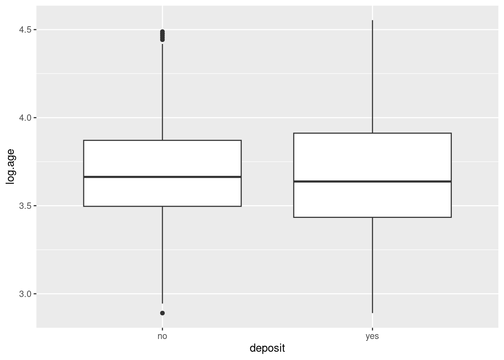

En el complejo mundo de la ciencia de datos, nos encontramos a menudo con conjuntos de datos que abarcan una amplia variedad de variables. Estas variables, en su mayoría cuantitativas, pueden proporcionar una gran cantidad de información, pero también pueden convertirse en un desafío cuando se trata de comprender y analizar de manera efectiva los datos. La gestión de grandes conjuntos de variables puede ser abrumadora y puede llevar a problemas como la alta correlación entre ellas, dificultando la extracción de información valiosa y la visualización clara de los datos. Imagina un conjunto de datos con más de \(50\) variables. Como científico de datos, has de analizar todas y cada una de ellas, así como sus posibles relaciones.
Es en este contexto que entran en juego las “Técnicas de Reducción de la Dimensión”. Estas técnicas son herramientas que nos permiten encontrar un equilibrio entre la riqueza de información y la simplicidad en el análisis. El objetivo principal de la reducción de la dimensión es identificar un conjunto más pequeño de variables, llamadas “variables latentes” o “componentes principales”, que capturen la mayor parte de la información esencial contenida en las variables originales. Este proceso se realiza con el menor costo de información posible, lo que facilita la gestión y el análisis de datos complejos.
Las ventajas de la reducción de la dimensión son múltiples. En primer lugar, permite reducir la cantidad de información utilizada, lo que puede ser especialmente útil cuando se trabaja con grandes conjuntos de datos. Además, la eliminación de problemas de alta correlación entre variables ayuda a eliminar la redundancia en los datos y a prevenir posibles distorsiones en los resultados del análisis. Pero quizás una de las ventajas más notables es la posibilidad de visualizar los datos de manera sencilla, a menudo en solo dos dimensiones, lo que facilita la interpretación y la comunicación de resultados.
Sin embargo, es importante mencionar una desventaja potencial de estas técnicas: la falta de explicabilidad de las nuevas variables. Dado que estas se construyen como combinaciones de las originales, a menudo requieren la experiencia de un experto en el dominio para su correcta interpretación. Esto significa que, si bien la reducción de la dimensión simplifica el análisis, también puede introducir cierta complejidad en la comprensión de las relaciones subyacentes entre las variables.
Despliega los paneles siguientes para descrubir algunas de las técnicas más conocidas.
Análisis de Componentes Principales (PCA)
PCA es una de las técnicas más populares para la reducción de la dimensión. Transforma las variables originales en un nuevo conjunto de variables no correlacionadas llamadas componentes principales. Estos componentes capturan la mayor parte de la variabilidad en los datos y se pueden utilizar para representar los datos en un espacio de menor dimensión.
Análisis de Factor
Similar a PCA, el análisis de factor busca identificar variables latentes o factores subyacentes que expliquen las relaciones entre las variables originales. Es útil cuando se sospecha que las variables observadas están influenciadas por factores no observados.
Reducción de la Dimensión Basada en Selección
Esta técnica implica seleccionar un subconjunto de variables originales en función de algún criterio, como su importancia para el problema o su capacidad de explicar la variabilidad. Algunos métodos de selección incluyen la selección de características y la eliminación de características redundantes.
Análisis Discriminante Lineal (LDA)
LDA es una técnica que se utiliza en problemas de clasificación. Busca encontrar una combinación lineal de variables que maximice la separación entre clases en el conjunto de datos, lo que puede reducir la dimensión al tiempo que preserva la información relevante para la clasificación.
Descomposición en Valores Singulares (SVD)
SVD es una técnica matricial que se utiliza en la factorización de matrices y la reducción de la dimensión. Es fundamental en métodos como PCA y puede utilizarse para reducir la dimensión de matrices de datos.
t-SNE es una técnica de reducción de la dimensión no lineal que se utiliza comúnmente para visualización de datos. Tiene la capacidad de preservar relaciones locales entre puntos en un espacio de menor dimensión.
Autoencoders
Los autoencoders son redes neuronales que se utilizan para aprender representaciones de datos de alta dimensión en un espacio de menor dimensión. Son especialmente útiles en problemas de reducción de la dimensión no lineal.
Reducción de la Dimensión Basada en la ingeniería de características
A veces, la reducción de la dimensión se puede lograr mediante la ingeniería de características (Feature Engineering), donde se crean nuevas variables que resumen la información de las originales de manera más efectiva.
En este tema, exploraremos en detalle las técnicas más utilizadas para la reducción de la dimensión, proporcionando ejemplos prácticos y pautas para su aplicación efectiva. Estas técnicas son esenciales para cualquier científico de datos que desee extraer conocimiento valioso de grandes conjuntos de datos y simplificar el proceso de análisis sin perder de vista la interpretación de los resultados.
Por tanto, podemos decir que los métodos de reducción de dimensionalidad son técnicas que se utilizan para reducir la cantidad de variables en un conjunto de datos mientras se intenta retener la información relevante. Sin embargo, existen enfoques adicionales para realizar la reducción de la dimensionalidad, que se clasifican comúnmente en tres categorías: filter, wrapper y embedded(John, Kohavi, y Pfleger 1994).
Métodos Filter
Los métodos filter son técnicas de selección de características que se aplican antes de entrenar un modelo de ML. Estos métodos evalúan la relación entre cada variable y la variable objetivo (o alguna medida de relevancia) sin tener en cuenta un modelo específico. Los métodos filter utilizan estadísticas, métricas de rendimiento, pruebas de hipótesis u otras técnicas para clasificar las características en función de su relevancia. Algunos ejemplos de métodos filter incluyen la correlación de Pearson, la información mutua y la prueba estadística chi-cuadrado. La principal ventaja de los métodos filter es su eficiencia computacional, ya que no requieren entrenar modelos.
Métodos Wrapper
Los métodos wrapper también son técnicas de selección de características, pero al contrario que los métodos filter, utilizan modelos de ML as características. Se evalúan múltiples modelos mediante procedimientos que añaden y/o eliminan variables predictoras para encontrar la combinación óptima que maximice el rendimiento del modelo. Los métodos wrapper pueden ser más precisos que los métodos filter, ya que tienen en cuenta la interacción entre las características, pero tienden a ser más computacionalmente costosos, ya que involucran el entrenamiento repetido de modelos.
Métodos Embedded:
Los métodos embedded incorporan la selección de características directamente en el proceso de entrenamiento de un modelo de ML. En lugar de realizar la selección de características como un paso separado, estos métodos evalúan la relevancia de las características mientras se ajustan al modelo. Esto significa que las características se seleccionan o ponderan automáticamente durante el entrenamiento del modelo. Ejemplos de métodos embedded incluyen la regresión L1 (Lasso), que impone penalizaciones a los coeficientes de las características menos importantes, y los métodos de árboles de decisión, que pueden evaluar la importancia de las características durante la construcción del árbol.
La elección entre métodos filter, wrapper y embedded depende de la naturaleza del problema, el conjunto de datos y las necesidades específicas del análisis. Cada enfoque tiene sus propias ventajas y desventajas, y es importante considerar factores como la eficiencia computacional, la calidad del modelo y la interpretabilidad al seleccionar el enfoque adecuado para la reducción de la dimensionalidad en un proyecto de ciencia de datos o ML.
4.1 Análisis de Componentes Principales (PCA)
Tal y como se ha indicado, el Análisis de Componentes Principales (PCA, en inglés, Principal Component Analysis) es una técnica de reducción de la dimensionalidad cuyo principal objetivo es simplificar la estructura de datos, preservando al mismo tiempo la mayor cantidad posible de información relevante. PCA logra esto transformando un conjunto de variables correlacionadas en un conjunto nuevo de variables no correlacionadas llamadas componentes principales.
Los pasos para aplicar esta técnica sobre un conjunto de datos son:
Cálculo de la matriz de covarianza: El primer paso en PCA implica calcular la matriz de covarianza de las variables originales. La covarianza es una medida de cómo dos variables cambian juntas. Una matriz de covarianza muestra cómo todas las variables del conjunto de datos se relacionan entre sí.
Obtención de los componentes principales: A continuación, se calculan los autovectores y autovalores de la matriz de covarianza. Los autovectores son las direcciones en las cuales los datos tienen la mayor varianza, y los autovalores representan la cantidad de varianza explicada por cada autovector. Probablemente hayas estudiado técnicas para el cálculo de autovectores y autovalores en cursos de Álgebra anteriores.
Selección de componentes principales: Después de calcular los autovectores y autovalores, se ordenan en orden descendente según la cantidad de varianza que explican. Esto implica que el primer componente principal explica la mayor varianza en los datos, el segundo componente principal explica la segunda mayor varianza (una vez eliminada la variabilidad explicada por el primer componente principal), y así sucesivamente. Por lo general, se selecciona un número pequeño (¡reducción de la dimensión!) de componentes principales que capturen una cantidad significativa de la varianza total.
Transformación de datos: Finalmente, los datos originales se transforman en el espacio de los componentes principales. Esto significa que las variables originales se combinan linealmente para formar nuevas variables (los componentes principales) que son ortogonales entre sí. Es decir, se crean nuevas variables, como combinación lineal de las originales, con la particularidad de que esas nuevas variables son incorreladas y de varianza \(1\). Por lo tanto, estos componentes principales no tienen multicolinealidad, lo que es útil en análisis posteriores.
El PCA se utiliza en diversas aplicaciones, como reducción de dimensionalidad, compresión de imágenes, análisis de datos, reconocimiento de patrones, etc. Permite simplificar datos complejos mientras se retiene la mayor cantidad posible de información importante. Al seleccionar un número apropiado de componentes principales, es posible reducir la dimensionalidad de los datos sin perder significado, lo que puede mejorar la eficiencia del análisis y la visualización.
4.1.1 PCA en R
Trabajemos con un ejemplo de datos en R. Este conjunto de datos contiene estadísticas, en arrestos por cada \(100.000\) residentes por asalto (Assault), asesinato (Murder) y secuestro (Rape) en los \(50\) Estados de USA en 1973. También se proporciona el porcentaje de la población en áreas urbanas (UrbanPop).
Murder Assault UrbanPop Rape
Min. : 0.800 Min. : 45.0 Min. :32.00 Min. : 7.30
1st Qu.: 4.075 1st Qu.:109.0 1st Qu.:54.50 1st Qu.:15.07
Median : 7.250 Median :159.0 Median :66.00 Median :20.10
Mean : 7.788 Mean :170.8 Mean :65.54 Mean :21.23
3rd Qu.:11.250 3rd Qu.:249.0 3rd Qu.:77.75 3rd Qu.:26.18
Max. :17.400 Max. :337.0 Max. :91.00 Max. :46.00
Las standard deviations son los autovalores de la matriz de correlaciones, y representan la variabilidad en cada componente. A mayor valor, más relevante es la variable correspondiente a efectos de visualización. Si queremos visualizar la importancia relativa de cada componente, haremos lo siguiente:
plot(prcomp(USArrests))
De modo numérico:
summary(prcomp(USArrests))
Importance of components:
PC1 PC2 PC3 PC4
Standard deviation 83.7324 14.21240 6.4894 2.48279
Proportion of Variance 0.9655 0.02782 0.0058 0.00085
Cumulative Proportion 0.9655 0.99335 0.9991 1.00000
Como vemos, la variabilidad de los datos se explica mayoritariamente por la primera componente principal PC1 que, tal y como se puede ver en la matriz Rotation, da un peso de \(0.9952\) a la variable Assault, y pesos cercanos a cero al resto de variables. En la tabla anterior se observa que la proporción de varianza explicada por la primera componente es del \(96.6\%\), es decir, es prácticamente la única relevante. Queda muy poca variabilidad para ser explicada por el resto de variable. ¿Qué está sucediendo? Si nos fijamos en los datos de USArrests, la magnitud de los valores de Assault es mucho mayor que la magnitud de las otras variables. Por ejemplo, en el caso de Alabama, \(236\) para la variable Assault frente a \(13.2\) de Murder ó \(21.2\) de Rape. Claramente es la variable que va a tener más influencia en el resultado final, tal y como se ve en el gráfico precedente. La segunda componente más influyente es PC2, que depende de UrbanPop, la siguiente variable en magnitud, y así sucesivamente.
¿Tiene sentido que una variable sea más influyente que otra por el mero hecho de estar medida en diferentes unidades de medida? Realmente no.¿Cómo solucionar este problema? La respuesta es la estandarización. Repitamos el análisis, pero estandarizando los datos:
plot(prcomp(USArrests,scale=T))
summary(prcomp(USArrests,scale=T))
Importance of components:
PC1 PC2 PC3 PC4
Standard deviation 1.5749 0.9949 0.59713 0.41645
Proportion of Variance 0.6201 0.2474 0.08914 0.04336
Cumulative Proportion 0.6201 0.8675 0.95664 1.00000
Como puede verse, con las dos primeras componentes recogemos prácticamente el \(87\%\) de la variabilidad. Esto quiere decir que un gráfico de los datos de USAarrests, representados por las dos primeras componentes principales será suficientemente representativo.
Antes de ir al gráfico, analicemos la matriz de rotaciones, en busca de interpretación semántica para las componentes principales:
PC1 asigna pesos, todos del mismo signo a las variables. Podemos comprobar que viene a representar un promedio ponderado de las variables originales. Es decir, es una medida resumen que permite ordenar, en dicha componente, el comportamiento de los \(50\) estados desde el punto de vista de los delitos cometidos. Al concentrarnos en la segunda componente principal, los estados serían ordenados en cuanto a su población urbana en un sentido, ponderando en sentido contrario el número de asesinatos. En PC3, el orden viene principalmente dado por los secuestros.
En cualquier caso, debemos tener presente que no hay ninguna garantía de interpretabilidad en un análisis PCA.
Dibujamos los datos proyectados sobre las dos primeras componentes:
plot(prcomp(USArrests,scale=T)$x[,1:2])
Sería deseable poder ver los nombres de los estados, en lugar de simples puntos. Para ello:
Puntos cercanos en el mapa indican comportamiento/perfil similar en cuanto a los delitos cometidos. Del gráfico podemos inferir que Florida, Nevada y California son tres puntos extremos en cuanto al comportamiento criminal. Pero, ¿en qué sentido? ¿muy baja o muy alta criminalidad? En este caso particular, la respuesta es muy alta, dado que en la matriz de rotación todos los pesos de la primera componente principal son negativos, luego a mayor valor en las variables originales, situación más a la izquierda en PC1. En cuanto a PC2, tenemos comportamientos extremos por ejemplo en Hawai por abajo y en Mississippi y North Carolina por arriba. En el primer caso hay mucha población urbana y pocos asesinatos. En el segundo, al contrario.
¿Cómo mejorar el gráfico? Un modo posible es incorporar la información de las variables utilizando la técnica del biplot.
biplot(prcomp(USArrests,scale=T))
Como vemos, la primera componente viene a situarse donde se situaría el promedio de las cuatro variables. Los estados casi se ordenan en la segunda componente por UrbanPop en un sentido, y por Murder en el otro, como ya hemos deducido/comprobado.
A continuación presentamos el mismo análisis para las variables continuas de la base de datos bank:
Click para ver el código
library (dplyr)bank =read.csv('https://raw.githubusercontent.com/rafiag/DTI2020/main/data/bank.csv')df= bank %>%filter(balance>0& previous>0& pdays>0) %>%mutate( log.balance=log(balance),log.age=log(age),log.campaign=log(campaign),log.previous=log(previous),log.pdays =log(pdays),log.duration=log(duration)) %>%select(log.balance,log.age,log.campaign,log.duration,log.previous,log.pdays)# No escaladoprcomp(df)
Dejamos la interpretación de los resultados como tarea para el alumno. A modo de pista, fíjate en la matriz de correlaciones en los ejemplos presentados.
Pregunta
¿Qué ocurre cuando se realiza un PCA con variables independientes?
4.2 Selección de características
En el tema Capítulo 3 vimos como es posible evaluar la correlación entre una variable objetivo y las variables explicativas asociadas. A continuación, a modo de ejercicio, vamos a estudiar la relación existente entre la variable objetivo deposit y la variable age de la base de datos bank. Tratamos de responder a la pregunta de si la variable edad del cliente influye, o no, en si el cliente suscribirá (o no) un depósito a plazo.
Aprentemente, no se observa una relación significativa entre ambas variables.
df = bank %>%select(age,deposit)%>%mutate(log.age=log(age))# Resumen para los casos de depósitosummary(df %>%filter(deposit=="yes") %>% .$log.age)
Min. 1st Qu. Median Mean 3rd Qu. Max.
2.890 3.434 3.638 3.681 3.912 4.554
# Resumen para los casos de no depósitosummary(df %>%filter(deposit=="no") %>% .$log.age)
Min. 1st Qu. Median Mean 3rd Qu. Max.
2.890 3.497 3.664 3.679 3.871 4.489
Efectivamente, los valores de resumen de edad en ambas categorías de la variable respuesta son muy similares. Gráficamente, podemos comparar los boxplots.
ggplot(df, aes(deposit, log.age)) +geom_boxplot()

Podemos constrastar la hipótesis nula de igualdad de medias mediante un test de la T:
t.test(log.age ~ deposit, data = df)
Welch Two Sample t-test
data: log.age by deposit
t = -0.26977, df = 10053, p-value = 0.7873
alternative hypothesis: true difference in means between group no and group yes is not equal to 0
95 percent confidence interval:
-0.011917888 0.009034321
sample estimates:
mean in group no mean in group yes
3.679125 3.680566
El \(p-valor\) es mayor que \(0.10\) por lo que no hay evidencia estadística en las observaciones en contra de la hipótesis nula. Podemos concluir, por tanto, que no existe una relación significativa (o al menos aún no la hemos localizado) entre las variables deposit y age. Podríamos, por tanto, eliminar la varible explicativa de la base de datos. De este modo se reduce la dimensionalidad del problema. Sin embargo, es una práctica peligrosa. La variable age podría resultar significativamente relevante cuando se controlen los efectos de otras variables dentro del futuro modelo de ML.
Para recordar
Eliminar variables explicativas en etapas tempranas del análisis para reducir la dimensionalidad del problema, conlleva el riesgo de pérdida de información que podría ser útil en etapas posteriores.
John, George H, Ron Kohavi, y Karl Pfleger. 1994. «Irrelevant features and the subset selection problem». En Machine learning proceedings 1994, 121-29. Elsevier.